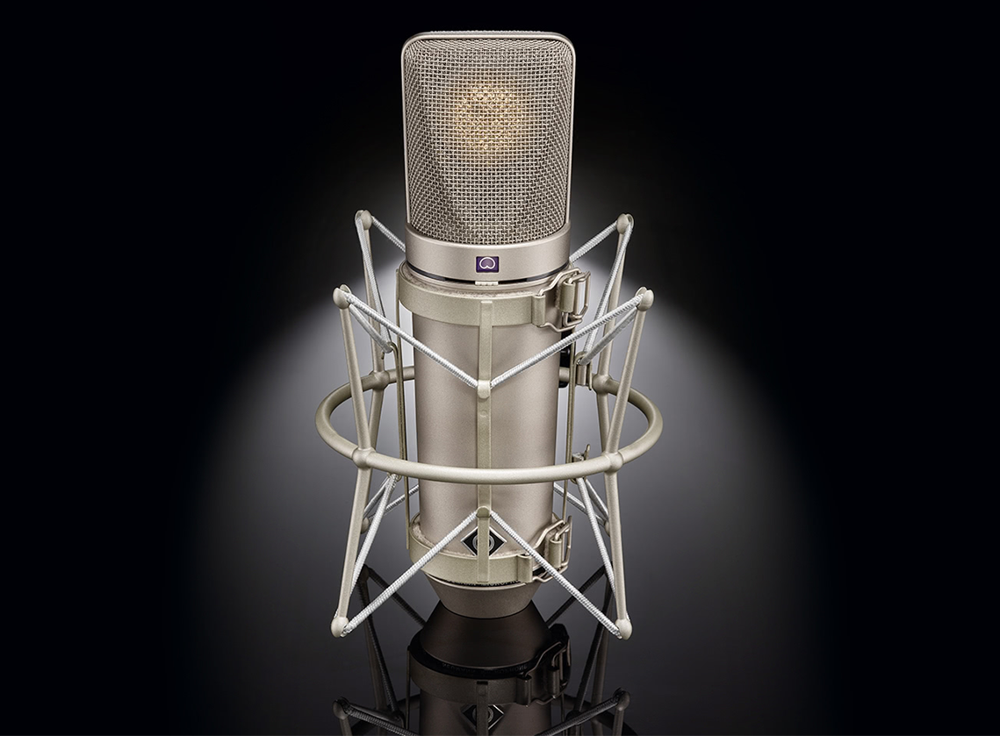

Werbaliser son site internet c'est le rendre audible afin de l'humaniser, de le rendre plus lisible, plus visible et plus intelligible sans pour autant modifier sa dimension visuelle.
Une publication que nous concevons comme une ambassade dans l'espace international de la société de l'information.
Oraliser le contenu de vos services, de vos œuvres et de vos prestations permet d'investir une dimension délaissée dans votre communication.
Werbaliser, c'est occuper un espace vacant sans défigurer votre identité, dans le respect de votre philosophie de votre éthique et bien entendu de votre charte graphique.
Werbaliser son image digitale ce n'est pas réformer sa présence sur internet mais la personnaliser davantage.
Notre but: donner à votre communication web le relief de sa voix propre.
Werbaliser c'est proposer un nouvel ambassadeur pour mieux propager votre message sur le réseau.
Internet 3.0
Le monde digital vers lequel se tourne l'avenir concentre sa réflexion et son effort sur davantage de fluidité, de simplicité pour le voyageur de la toile.
Il faut imaginer désormais que toute plate forme internet est un vaisseau où le passager doit trouver le maximum de confort pour atteindre avec assurance sa destination.
De façon un peu paradoxale, l'internaute voyage sans souvent savoir où il va.
Werbaliser c'est ouvrir des fenêtres sur le paysage que parcourt le client, l'usager, le citoyen.
Faire entrer de la lumière pour se guider au mieux et le plus simplement possible dans ce périple.
C'est grâce à la voix que Werbatim entend conduire cette lumière qui traverse l'univers de l'information.
Votre site internet oralisé, tout ou partie de ses propos et de ses contenus fidèlement illustré par une lecture ponctué pour la vitesse et le confort du voyage.
Toujours respectueux de l'image de votre société ou de votre institution, respectueux de votre vitrine internet et de ses fondamentaux.
Werbaliser c'est proposer un nouvel ambassadeur pour mieux propager votre message sur le réseau.
Qui sommes-nous ?
Werbatim est le produit des talents conjugués de comédiens, d'ingénieurs informatiques, de journalistes et de professionnels du son qui pensent dès maintenant l'internet du futur.
Au terme de leurs réflexions, ceux ci ont anticipé un développement de l'univers digital qui pourrait emprunter des tendances propres à bouleverser le lien social et les interactions sur la toile.
L'apparition de l'IA, de la synthèse vocale sont perçues comme des progrès indéniables mais également comme des enjeux à considérer avec les soins et le recul nécessaires.
Le choix de werbaliser votre univers digital dans un esprit d'humanisation relève d'une alternative résolue choisie.
C'est la solution la plus enviable que nous désirons confronter avec les récentes extension du Big data, de l'IA et l’apparition des chatbots qui génèrent de plus en plus de défiance au sein d'usagers à présent fatigués de dialoguer avec des boites vocales et des robots.
Alors qui sommes-nous ? Disons simplement, les nouveaux ambassadeurs de votre identité digitale.
Témoignage
Fusce nec felis id lacus sollicitudin vulputate. Proin tincidunt, arcu id pellentesque accumsan, neque dolor imperdiet ligula, quis viverra tellus nulla a odio. Curabitur vitae enim risus, at placerat turpis. Mauris feugiat suscipit tempus, felis in velit.
Thomas - Web Designer
Notre expertise
Nam tristique purus nec augue vulputate vestibulum. Nulla facilisi. Suspendisse purus arcu, condimentum a iaculis et, accumsan ac tellus. In ut cursus erat.
Services
Nos prestations:
Dessiner le profil vocal de votre site
Werbatim s'engage à finaliser la création d'une banque sonore dans laquelle sont consignées tous les fichiers audio propres aux contenus de votre plate-forme internet.
L’utilisateur n’a plus qu’à activer d'un simple click la fonction werbaliser en sélectionnant le lien ou la page qui l’intéresse pour déclencher la lecture audio.
Le codage d’une telle structure e st à la portée de la majorité des webmasters, toutefois nos ingénieurs en informatique ont leur rôle à jouer et garantissent un support technique de pointe.
Elargir votre périmètre de communication
C’est principalement dans la conception : le choix des voix et la qualité de lecture que la stratégie de werbalisation mobilise toute notre expertise et l'étendue de notre savoir-faire.
Le choix de la voix de votre ambassadeur vocal est le premier pas pour construire cette identité.
Qualité de la lecture, ton de la lecture, cadence de la lecture, choix des textes à illustrer vocalement sont autant de points et de questions qui retiennent notre attention en qualité de professionnels de la werbalisation.
La stratégie mise en place se fait naturellemnt en étroite collaboration avec votre chargé de communication.
Nos tarifications
Le coût d’une werbalisation sera évidemment variable en fonction du volume de texte traité et de la prise en charge globale de votre identité vocale.
Toutefois nous proposons un service de base le plus simple et le meilleur marché possible qui se borne à werbaliser votre site tel quel, c'est à dire à fournir les audiovox de vos contenus numériques et à les implémenter.
Nous sommes à votre disposition pour établir un devis cohérent basée sur une werbalisation structurée.
Matériel

Nam at arcu libero, ut venenatis elit. Nulla eget risus turpis, non aliquet dui.
Donec quis elementum lectus. Etiam dignissim turpis id metus mollis posuere. In eu odio nec dui ullamcorper blandit nec sollicitudin purus.
Pellentesque habitant morbi tristique senectus et netus et malesuada fames ac turpis egestas. Maecenas rutrum eros nulla, quis feugiat est. Nullam vel ligula ante, eu vestibulum diam. Praesent in est est.
Fusce nec felis id lacus sollicitudin vulputate. Proin tincidunt, arcu id pellentesque accumsan, neque dolor imperdiet ligula, quis viverra tellus nulla a odio. Curabitur vitae enim risus, at placerat turpis. Mauris feugiat suscipit tempus, felis in velit.
Thet Thet - Web Designer
Quel bénéfices pour vous et pour eux ?
Les multiples bénéfices de la werbalisation sont nombreux
Un gain d'espace ( surface de lecture ) et de temps
Pour les esprits les plus vif la possibilité de poursuivre la lecture d’un article tandis que l’on prend parallèlement connaissance d’un autre contenu.
Les gens plus paresseux ou plus fatigués y trouveront leur compte dans la mesure où parfois on oublie sa paire de lunettes, on ne dispose que de son téléphone mobile pour surfer sur le web, que enfin, on serait tenté d’en savoir plus mais on n’a plus le courage de creuser davantage un sujet dans des lectures harassantes.
Offrir un accès plus confortable aux personnes en situation de handicap.
Soulignons à ce titre la dimension humaine considérable apporté et désirée par notre procédé de werbalisation
Il est implicitement entendu pour cette évidente raison d’humanité que toute voix synthétique se trouve de facto exclue de cette nouvelle politique de communication.
Un moyen de sensibilisation supplémentaire pour vous de mettre en avant un produit ou un service.
C'est le retour aux formes éprouvés et classiques de la publicité qui dessine une façon raffiné de mise en valeur au moyen de lectures ciblés.
La faculté de partager pour un usager non plus une page ou un lien hypertexte mais de fournir un lien audio autonome sur un sujet.
Offrir à vos visiteurs un gain de pertinence, de vitalité et de crédit en faveur de ce partage.
D’autres avantages sont implicites, et nous vous laissons les deviner.
Techniquement, quoi de neuf ?
De nos jours une quantité croissante de gens consulte le web sur leur téléphone mobile où l'espace de lecture est beaucoup plus restreint.
La Werbalisation offre un confort de navigation et l'agrément d'une écoute qui remplace des lectures fastidieuses au sein d'environnements inadaptés (métro, bus, trains etc..).
Enfin, vous développez un capital de données sonores nouvelles grâce aux audiovox.
Cette capitalisation invite l'usager à conserver ce qui peut l'intéresser pour un usage ultérieur offline.
Il faut comprendre qu'à l’avenir chaque site internet disposera d' une interface audio où le contenu texte du site sera archivé sous forme audio.
Ainsi la substance éditorial profonde de tout site internet quel que soit son objet sera nécessairement accompagné d’un auxiliaire vocale sous la forme d’un fichier audio qui sera ouvert tandis que l’usager clique sur le lien assorti de cette petite icône en compagnie du titre de tout article dont l'activation simple offrira l'accès à son contenu verbalisé.
Au plan technique ( Techniquement?)
Toute structure web donc toute publication est susceptible d’être oralisé de façon assez simple
D’abord en enregistrant un audiovox du contenu cible
Ensuite nos techniciens en accord avec votre webmaster implémente chacun de ces fichiers audiovox au lien hypertexte auquel il est attaché de façon native comme vous l'expérimentez sur le présent site.
Contact Information
Praesent rutrum augue vel felis vehicula vel luctus sapien commodo. Aenean convallis, sem in tempus dictum, lorem urna luctus augue, et tempor justo orci in elit. Nam a pretium libero.
{kind=link}